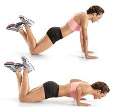

Técnica · En casa · 13 de junio de 2021
Flexión de codos o lagartijas

Flexión de codos o lagartijas
Introducción
Las flexiones de codo, comúnmente conocidas como lagartijas, plancha, pechada o simplemente flexiones, son un ejercicio clásico que utiliza el peso corporal para fortalecer múltiples grupos musculares. Este movimiento es un pilar en disciplinas como la gimnasia deportiva, la calistenia y el entrenamiento militar, además de ser una opción versátil para cualquier rutina de fitness, ya que no requiere equipo y puede realizarse en cualquier lugar, incluso en superficies desafiantes como pantanos, agua o hielo en competencias.
Músculos trabajados
Las flexiones son uno de los ejercicios más efectivos con el peso corporal, ya que involucran varios grupos musculares:
Principales: Pectorales (pecho), tríceps braquiales y deltoides anteriores (hombros).
Secundarios: Core (abdominales y oblicuos, que estabilizan el cuerpo), glúteos, cuádriceps y músculos estabilizadores de la espalda.
Isométricos: El abdomen y los músculos lumbares trabajan para mantener la alineación del cuerpo.
Dependiendo de la variación de la flexión, puedes enfocar más el esfuerzo en los pectorales, tríceps o deltoides, lo que la hace adaptable a diferentes objetivos.
Beneficios de las flexiones
Fortalecimiento del tren superior: Desarrolla fuerza en pecho, hombros y brazos.
Fortalecimiento del core: Mejora la estabilidad y la postura al activar los músculos abdominales.
Versatilidad: Se pueden realizar en cualquier lugar sin necesidad de equipo.
Adaptabilidad: Ajustable para principiantes (apoyando rodillas) o avanzados (elevando pies o añadiendo peso).
Mejora funcional: Prepara el cuerpo para actividades físicas exigentes, como las de entrenamiento militar o competencias.
Cómo realizar una flexión de codo correctamente
Sigue estos pasos para ejecutar una flexión con buena técnica:
Posición inicial:
Acuéstate boca abajo en el suelo.
Coloca las palmas de las manos a la altura de los pectorales, ligeramente más anchas que los hombros.
Apóyate en las puntas de los pies (o en las rodillas si eres principiante).
Asegúrate de que los codos estén cerca de las costillas y el cuerpo forme una línea recta desde la cabeza hasta los talones.
Ejecución:
Impulsa tu cuerpo hacia arriba con la fuerza de los brazos y pectorales, extendiendo completamente los codos sin bloquearlos.
Mantén los hombros alineados sobre las manos en la posición alta.
Baja lentamente hasta que el pecho esté cerca del suelo (sin tocarlo), manteniendo el core activado.
Repite el movimiento de forma controlada.
Recomendaciones:
Principiantes: Realiza 3-4 series de 8-12 repeticiones, apoyando las rodillas si es necesario.
Intermedios/Avanzados: Realiza 4 series de 12-15 repeticiones, o aumenta la dificultad con variaciones.
Descansa 30-60 segundos entre series.
Consejos para una técnica segura
Alineación corporal: Evita arquear o hundir la espalda; mantén el core activado.
Respiración: Inhala al bajar y exhala al subir.
Control: Evita movimientos rápidos o bruscos para proteger las articulaciones.
Superficie: Usa una colchoneta para mayor comodidad en manos y rodillas.
Progresión: Si eres principiante, empieza con flexiones inclinadas (manos en una superficie elevada) y avanza gradualmente.
Variaciones de las flexiones
Las flexiones pueden adaptarse para todos los niveles:
Para principiantes:
Flexiones con rodillas apoyadas: Reduce la carga sobre los brazos y el core.
Flexiones inclinadas: Coloca las manos en una superficie elevada (como una mesa o banco).
Para intermedios:
Flexiones estándar: Con apoyo en las puntas de los pies.
Flexiones diamante: Junta las manos formando un triángulo para trabajar más los tríceps.
Para avanzados:
Flexiones con pies elevados: Coloca los pies en un banco para aumentar la intensidad.
Flexiones lastradas: Añade peso en la espalda (con precaución y supervisión).
Flexiones pliométricas: Incluye un salto con las manos para mayor explosividad.
Aplicaciones en competencias
Las flexiones son un ejercicio clave en competencias de fitness, entrenamiento militar y calistenia, donde se realizan en condiciones extremas (barro, agua, superficies inestables). Su simplicidad y efectividad las hacen ideales para entrenamientos funcionales y pruebas de resistencia.
Ejemplo de rutina con flexiones
Calentamiento (5 minutos): Movilidad de hombros, estiramientos dinámicos.
Circuito (3-4 rondas):
Flexiones estándar: 10-15 repeticiones.
Plancha frontal: 20-30 segundos.
Flexiones diamante: 8-12 repeticiones.
Descanso: 30 segundos entre rondas.
Enfriamiento (5 minutos): Estiramientos para pecho, hombros y tríceps.


Conclusión
Las flexiones de codo son un ejercicio fundamental que combina fuerza, resistencia y estabilidad. Su versatilidad las hace perfectas para cualquier nivel de condición física, desde principiantes hasta atletas avanzados. Incorpóralas en tu rutina para fortalecer tu cuerpo, mejorar tu postura y prepararte para desafíos físicos. ¡Empieza hoy y lleva tu entrenamiento al siguiente nivel!